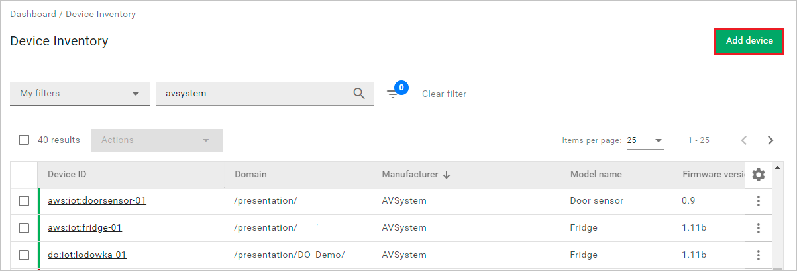
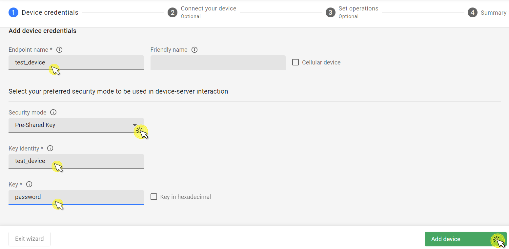
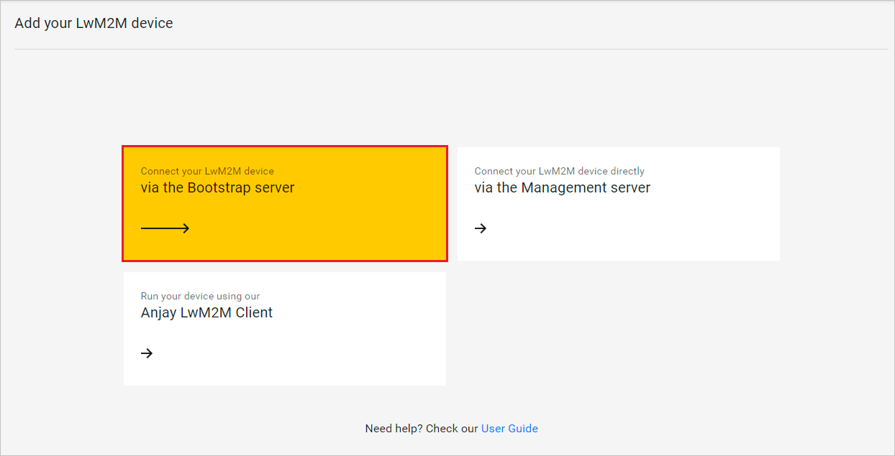
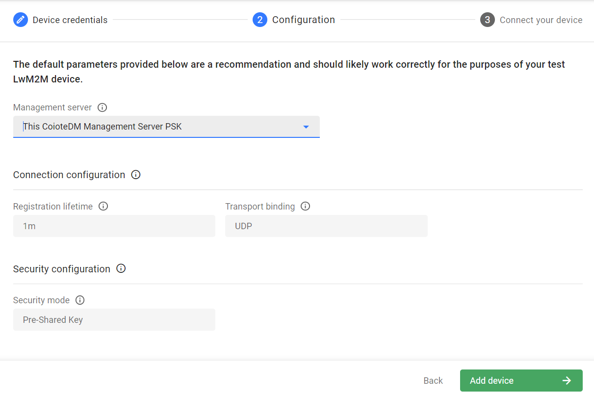
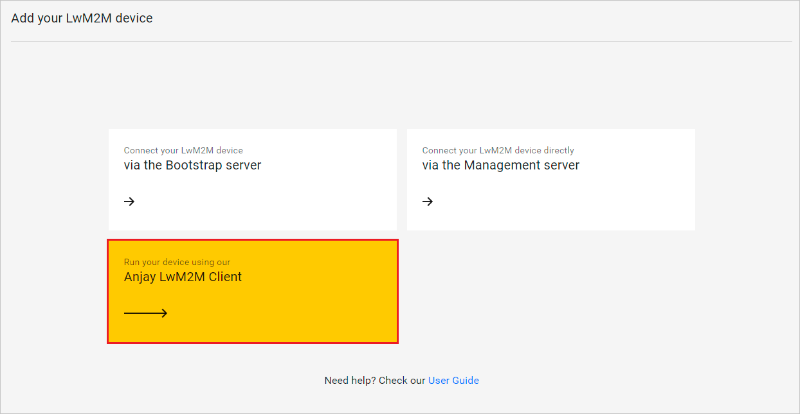

Device onboarding#
This guide will walk you through the process of adding new devices to Coiote DM. You will learn how to onboard devices using different scenarios: connection via the Management server, via the Bootstrap server, or running a simulated test device with the Anjay LwM2M Client.
Prerequisites#
- An active Coiote DM user account with appropriate role assigned.
- A LwM2M device (except for the simulated test device scenario).
- An Anjay SDK repository (only for the simulated test device scenario).
- A configured Bootstrap server (only for the Bootstrap server scenario).
Add a device via the Management server#
To add a device using the Management server:
-
From the navigation menu, select Device Inventory and click the Add device button.

Note
If you're a new user with no added devices, the Add your LwM2M device panel will be displayed upon logging in to the platform.
-
Select the Connect your LwM2M device directly via the Management server tile.

- In the Device credentials step, provide the following:
- Device ID - enter the endpoint name of your LwM2M device.
- Friendly name (optional) - enter a name for your device that will help user identify it in the platform. 
- Security mode:
- PSK - authorize your device using a pre-shared key. To use this option, provide the following:
- Key identity - define the name that the device will use during DTLS handshake. Can be equal with the LwM2M device endpoint name.
- Key - provide the shared secret used in the device-server authentication. Select the Key in hexadecimal check box to enable specifying the key in hexadecimal format.
- NoSec - use the device with no security established for the device-server communication. Using this mode is not recommended except for testing purposes.
- Certificate - secure your device-server communication with a certificate:
- Select Use a previously uploaded certificate if you have already uploaded a certificate to the platform using the DTLS/TLS Certificates panel.
- Select Upload a new certificate to load your certificate file using the Browse button.
- PSK - authorize your device using a pre-shared key. To use this option, provide the following:
-
Click the Add device button and Confirm in the confirmation pop-up.
Important
At this stage, your device will be already visible in the platform. However, to get your device connected, you need to configure it using the credentials from the next step.
-
In the Connect your device step, insert the given connection parameters into your device to start connection.
- Click Go to device to see your added device dashboard.

Add a device via the Bootstrap server#
To add a device using the Bootstrap server:
-
From the navigation menu, select Device Inventory and click the Add device button.
Note
If you're a new user with no added devices, the Add your LwM2M device panel will be displayed upon logging in to the platform.
-
Select the Connect your LwM2M device via the Bootstrap server tile. 
- In the Device credentials step, provide the following:
- Device ID - enter the endpoint name of your LwM2M device.
- Friendly name (optional) - enter a name for your device that will help user identify it in the platform.
- Security mode:
- PSK - authorize your device using a pre-shared key. To use this option, provide the following:
- Key identity - define the name that the device will use during DTLS handshake. Can be equal with the LwM2M device endpoint name.
- Key - provide the shared secret used in the device-server authentication. Select the Key in hexadecimal check box to enable specifying the key in hexadecimal format.
- NoSec - use the device with no security established for the device-server communication. It is recommended to use this mode only for testing purposes.
- Certificate - secure your device-server communication with a certificate:
- Select Use a previously uploaded certificate if you have already uploaded a certificate to the platform using the DTLS/TLS Certificates panel.
- Select Upload a new certificate to load your certificate file using the Browse button.
- PSK - authorize your device using a pre-shared key. To use this option, provide the following:
- Click the Configuration button to go to the next step.
- In the Configuration step, select a Management server for your device from the drop-down list:

- Use the bootstrap configuration set as default for your domain - use this setting if you want to make use of the inherited bootstrap settings for your domain.
- This Coiote DM Management Server (Cert with EST) - use this setting if you have chosen the Certificate mode in the Device credentials step.
- This Coiote DM Management Server NoSec - use this setting to establish the device-server communication with no security. Using this mode is not recommended except for testing purposes.
- This Coiote DM Management Server PSK - use this setting to authorize the device-server communication using a pre-shared key.
- Your custom bootstrap setting - this type of setting will appear if you have configured a bootstrap server setting using the Bootstrap configuration panel.
-
Click the Add device button and Confirm in the confirmation pop-up.
Important
At this stage, your device will be already visible in the platform. However, to get your device connected, you need to configure it using the credentials from the next step.
-
In the Connect your device step, insert the given connection parameters into your device to start connection.
- Click Go to device to see your added device dashboard.
Add a device using the Anjay LwM2M Client#
To add a simulated device with the Anjay LwM2M Client:
-
From the navigation menu, select Device Inventory and click the Add device button.
Note
If you're a new user with no added devices, the Add your LwM2M device panel will be displayed upon logging in to the platform.
-
Select the Run your device using the Anjay LwM2M Client tile. 
- Open a command line interface in your Anjay SDK repository folder and run the command displayed inside the command field.

- Click Go to device to see your added device dashboard.